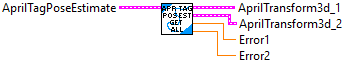
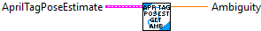
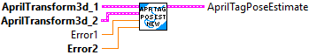

Get individual data items from the AprilTagPoseEstimate data cluster.
Inputs:
-- AprilTagPoseEstimate -- AprilTagPoseEstimate -- Input data cluster
Outputs:
-- AprilTransform3d_1 -- Transform3d -- First april tag transform
-- AprilTransform3d_1 -- Transform3d -- First april tag transform
-- Error1 -- double -- Object-space error of pose 1
-- Error2 -- double -- Object-space error of pose 2

Get the ratio of pose reprojection errors, called ambiguity. Numbers above 0.2 are likely to be ambiguous.
Inputs:
-- AprilTagPoseEstimate -- AprilTagPoseEstimate -- Input data cluster
Outputs:
-- Ambiguity -- double -- The ratio of pose reprojection errors.

Create a new AprilTagPoseEstimate data cluster from two transoform and their individual errors.
Inputs:
-- AprilTransform_1 -- Transform3d --
-- AprilTransform_1 -- Transform3d --
-- Error1 -- double -- Object-space error of pose 1
-- Error2 -- double -- Object-space error of pose 2
Outputs:
-- AprilTagPoseEstimate -- AprilTagPoseEstimate -- Output data cluster.